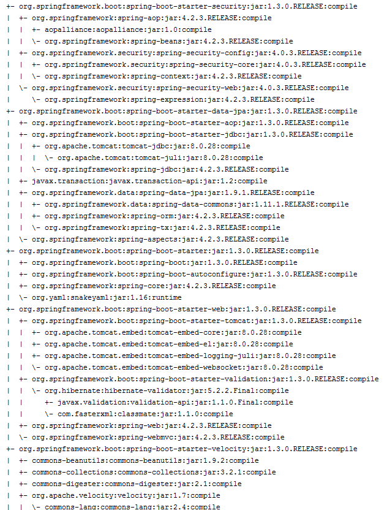
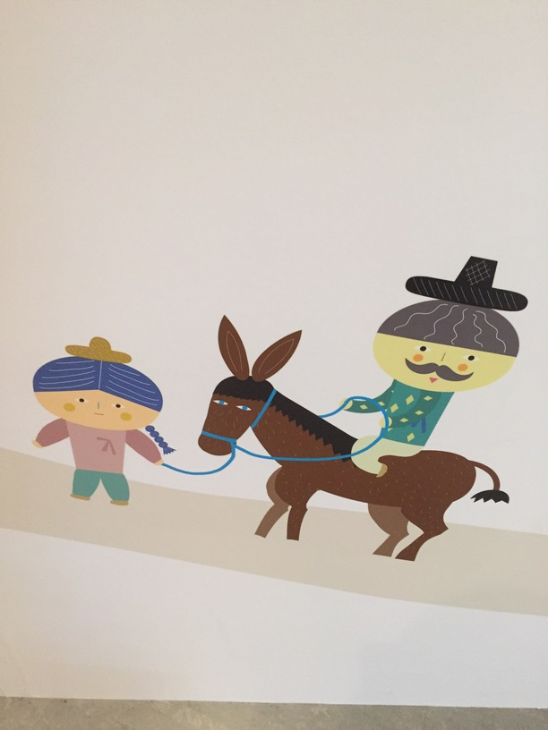
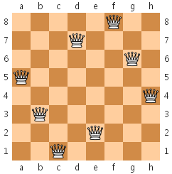
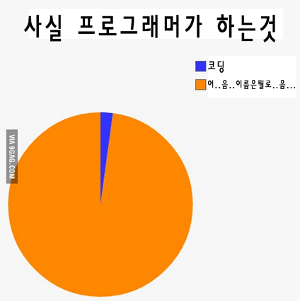
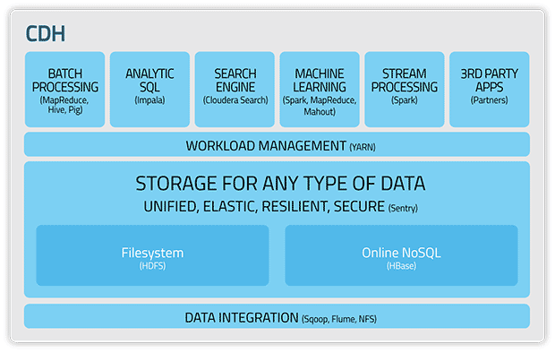
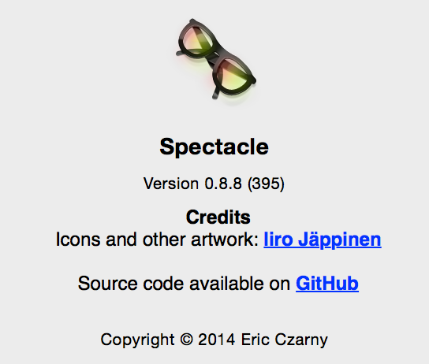
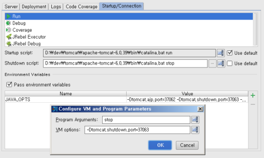

20151229
Besiege20151227
jQuery.ajax({ url: '' , contentType: 'application/json; charset=utf-8' , type: 'POST' , data: JSON.stringify({ }) , success: function(data) { console.log(data); } });20151226
20151224
http://slnwww.slideshare.net/gyumee/ddd-1006738420151222
쉬운게 답인것 같다. 어려우면 복잡한 룰을 회피해서라도 쉬운 것을 선택하자. 제시하는 그대로 갈 필요는 없다. 조금은 어색하더라도 더 쉬운 길을 선택하자.20151221
https://www.facebook.com/groups/springkorea/permalink/784766611634970/20151217
잘 모르겠다. 이론도 잘 모르겠다. 그냥 재밌게 쉬운 코드를 덜 짜고 잘 움직이면 좋겠다. 그리고 그게 의미있게 사용되면 좋겠다.Change the current branch to master in git
git checkout better_branch git merge --strategy=ours master # keep the content of this branch, but record a merge git checkout master git merge better_branch # fast-forward master up to the merge http://stackoverflow.com/questions/2763006/change-the-current-branch-to-master-in-git20151215
20151213
http://stackoverflow.com/questions/28556627/how-to-autowire-properties-bean-from-condition20151211
mvn dependency:tree -Dverbose  https://github.com/spring-projects/spring-boot/wiki/Spring-Boot-1.3.0-RC1-Release-Notes20151210
20151209
20151203
20151201
http://davidpallmann.blogspot.kr/2012/04/docshare-illustrating-cqrs-pattern-with.html20151130
Unidirectional VS Bidirectional
http://stackoverflow.com/questions/5360795/what-is-the-difference-between-unidirectional-and-bidirectional-associations https://www.facebook.com/groups/hibernatekorea/permalink/979960448693698/ https://www.facebook.com/groups/hibernatekorea/permalink/979828338706909/20151126
와 진짜 어렵다. 느낌코딩, 느낌이 좀 오기는 오는데... JPA 3.0 이후 부터 쓸가...20151125
@JoinTable
Unidirectional Relationshiop
http://stackoverflow.com/questions/5478328/jpa-jointable-annotation https://en.wikibooks.org/wiki/Java_Persistence/OneToMany http://stackoverflow.com/questions/3515756/unidirectional-relationship-in-entity-bean-jpa20151123
왜이리 어렵지?20151116
20151108
배포툴을 만들줄이야 shell script를 공부할 줄이야 IFS: Internal Field Seperator verbatim20151026
20151024
익숙함을 버리는게 정말 어렵네. 세월이 흘러가고 우리 앞의 생이 끝나갈 때 누군가 그대에게 작은 목소리로 물어보면 대답할 수 있나 지나간 세월에 후횐 없노라고 그대여 - 흐르는 시간 속에서 질문은 지워지지 않네 우린 그 무엇을 찾아 이 세상에 왔을까 그 대답을 찾기 위해 우리는 홀로 걸어가네20151014
http://www.ansible.com/
20151013
20151004
parameter cookie referer agent ip user author admin config20151002
참으로 고통스러운 작업이다. 이제 끝이 좀 보일려고 한다.
20150918
괜찮아, 난 할 수 있다...20150917
마음을 비우자.20150907
20150906
20150904
JPA(no relation) + QueryDSL20150903
행복해 보이는 사람을 보는 것이 행복하다.
20150901
LOSER 외톨이 센 척하는 겁쟁이 못된 양아치 거울 속에 넌 JUST A LOSER 외톨이 상처뿐인 머저리 더러운 쓰레기 거울 속에 난 I’M A 솔직히 세상과 난 어울린 적 없어 홀로였던 내겐 사랑 따윈 벌써 잊혀 진지 오래 저 시간 속에 더 이상은 못 듣겠어 희망찬 사랑 노래 너나 나나 그저 길들여진 대로 각본 속에 놀아나는 슬픈 삐에로 난 멀리 와버렸어 I’M COMING HOME 이제 다시 돌아갈래 어릴 적 제자리로 언제부턴가 난 하늘 보다 땅을 더 바라보게 돼 숨쉬기조차 힘겨워 손을 뻗지만 그 누구도 날 잡아 주질 않네 I’M A20150831
20150830
BIGBANG - LOSER M/VOh thats really catchy.
20150823
20150822
20150820
Hierarchy Class Productivity Guide
20150819
20150818
20150816
Everything that has a beginning has an end.20150815
20150810
제게 연령이라는 개념은 존재하지 않습니다. https://www.youtube.com/watch?v=y9ubf4MM3JE20150809
20150807
20150803
http://mug896.gitbooks.io/shell-script/content/ Classless Inter-Domain Routing http://www.ipaddressguide.com/cidr20150728
http://media.daum.net/digital/others/newsview?newsid=20150728093825545 http://auto.daum.net/review/newsview.daum?newsid=MD2015072808541080120150727
컴퓨터 주문 단방향: SHA-256 양방향: AES-25620150724
http://www.gstatic.com/tv/thumb/movieposters/28886/p28886_p_v7_aa.jpg20150721
http://cartoon.media.daum.net/webtoon/viewer/3198920150717
20150710
20150709
http://data-arts.appspot.com/globe-search/ http://earth.nullschool.net/20150708
쉬운 코드를 만드는 것이 어렵다. It's hard to write simple code.20150706
20150701
모든 것은 의미가 없다. 불일치 테이블의 컬럼명과 자바소스의 필드명과 자바스크립트의 변수명과 URL의 파라미트명과 코드명과 코드값들과 CSS의 클래스명의 불일치는 자연의 섭리이다. 이 모든 이름이 일치하는 프로젝트는 존재하지 않을 것이다.20150625
20150624
20150623
모든 서비스 was 8대로 맞춤20150622
쉬운 코드 만드는게 어렵다.20150621
됐습니다. 전 일요일에는 일 안해요. 아멜리는 갑자기 절대적인 평안을 느꼈다.20150620
20150618
20150614
sudo chattr -i /etc/sudoers http://unix.stackexchange.com/questions/94110/unable-to-run-sudo-chmod-w-etc-hosts20150607
20150604
20150603
No 'Access-Control-Allow-Origin' header is present on the requested resource.20150601
20150530
20150525
20150524
20150522
entrepreneur http://imperavi.com/redactor/20150521
New ‘Galaxy’ Crayfishhttp://en.fishki.net/1536509-new-galaxy-crayfish-discovered-in-indonesia.html
20150512
가장 단순한 방법을 선택하겠습니다. I'm going to choose simple one.20150510
20150506
20150430
http://gantt.twproject.com/20150429
Only I can change my life. No one can do it for me. - Carol Bumett20150428
Pseudo Elements http://s2junn.tistory.com/5820150422
[HIT] 김진호 - 가족사진 불후의 명곡2.20140524[EBS 스페이스 공감] 윤석철의 집들이 - 양화대교(Zion.T)

20150420
8 queen problem 20150415
AVL Tree 가장 초기에 나온 균형 잡힌 이진 탐색 트리이다. Red-BLack Tree 자가 균형 이진 탐색트리로써 대표적으로 연관 배열 등을 구현하는데 쓰이는 자료구조이다. B-Tree 데이터베이스와 파일 시스템에 널리 사용되는 자료구조의 일종으로 이진 트리를 확장해 하나의 노드가 가질수 있는 자식 노드의 최대 숫자가 2보다 큰 트리구조이다. B+ Tree B-Tree의 변형구조로 모든 레코드들이 트리의 가장 하위 레벨에 정렬되어 있고 오직 키들만이 내부 블록에 저장된다. 이 하위 레벨은 데이터는 linked list로 연결되어 있다. 블록기반 스토리지에서 저장데이터의 효율적인 검색에 유용함20150411
https://www.youtube.com/watch?v=GFYT7Lqt1h8&list=PLlrATfBNZ98eOOCk2fOFg7Qg5yoQfFAdf20150410
inhale exhale20150401
http://material-ui.com/#/components/date-picker20150331
color blindness achromatopsia partial color blindness dyschromatopsia20150330
/Library/Java/JavaVirtualMachines - JDK 7, 8 /System/Library/Java/JavaVirtualMachines - JDK 6http://javarouka.github.io/pt/yeoman/#/32
20150327
https://www.polymer-project.org/0.5/
20150326

20150325
Life is a risk. walkthroughhttp://frozen.disney.com/olaf
20150323
20150320
코딩할때 어려운 점 이름짓기 - 정말로 어렵다 일관성 있는 flow 유지하기 - 정말로 어렵다. 코딩할때 찜찜한 점 오류가 발생하는데 특정 코드 블럭을 아래나 위로 옮겨 보니깐 된다 - 정말 찜찜하다.  https://iplaboratory.wordpress.com/tag/%EB%B3%80%EC%88%98-%EC%9D%B4%EB%A6%84/20150318
https://www.parse.com Swift20150317
SCAR-H
20150316
Kerberos http://noon.tistory.com/995 OpenStack http://naleejang.tistory.com/100 Apple Script Modern Warfare2 Sillicon Vally20150312
배포 디렉터리 최신 100개만 남기고 지우기 find /service/releases -maxdepth 1 -mindepth 1 | sort -r | tail -n +100 | xargs rm -rf20150311
사진 정리 및 인화20150310
ant tar task filemode20150309
지금, 만나러 갑니다20150306
Thunderbolt 디스플레이 도착20150303
CDH  http://www.cloudera.com/content/cloudera/en/products-and-services/cdh.html20150302
판교생활시작 삼시세끼 챙겨먹기가 힘들구나 보고싶다 K-Pop Old&New #70 : Love Story by 쥐플라(G.Fla)(Vocal 정인(Jung In))
20150225
http://www.macyourself.com/2013/01/27/how-to-lock-your-mac-screen-with-a-keyboard-shortcut/ pmset displaysleepnow http://apple.stackexchange.com/questions/35699/how-can-i-sleep-the-display-from-terminal
20150224
Karabiner
Change Control_L Key(Left Control) Control_L to Command_L Change Tab Key Use Option+Tabas "Switch application" (Command+Tab) For PC Users Use PC Style Home/End #2 Fore Korean Items for backwards compatibility Toggle HanEng Key(to command_L(R)+Space)IntelliJ
Command+F Command+C Command+X Command+V Command+A Command+Z Command+Y Command+W next word Command+B previous word Command+G find usages Command+R Command+D Command+/ Command+E delegate methods... Command+P commit changes Command+, preferences Home Shift+Home End Shift+End Shift+Command+L extract variable Shift+Command+F extract field Shift+Command+C extract constant Shift+Command+P extract parameter Shift+Command+M extract method Shift+R rename Shift+Command+R navigate file Shift+Command+H find in path... Shift+Command+W close all Alt+Command completion Lone Survivor https://mirror.enha.kr/wiki/론%20서바이버20150223
Generation Kill http://blog.daum.net/_blog/BlogTypeView.do?blogid=0ZgFW&articleno=257&categoryId=37®dt=20130122000551
20150217
20150215
20150213
http://fiddler.wikidot.com/mono20150211
git local repository remote에 연결하기 git remote add origin http//IP/path/to/repository git push origin master https://youtrack.jetbrains.com/issue/IDEA-87099 https://pqrs.org/osx/karabiner/  http://spectacleapp.com/ https://itunes.apple.com/us/app/skitch-snap.-mark-up.-share./id425955336?mt=1220150210
읽었던 책도 기억이 안나고 봤던 영화도 기억이 안나고 살았던 인생도 기억이 안날터이다. 분명하다. 이 점이 두렵다.20150206

20150204
shortcut alt + enter: add import shfit + alt + o: organize import ctrl + d: delete line shift + alt + l: extract variable shift + alt + m: extract method ctrl + alt + down: duplicated lines alt + down: move down alt + up: move up shift + ctlr + r: find resource F3: go declartion fn + right: move to line end fn + left: move to line start shift + fn + right: move to line end with selection shift + fn + left: move to line start with selection ctrl + right: next screen ctrl + left: previous screen ctrl + alt + s: preference codenvy 멀지 않은 것 같다. 웹브라우즈가 IDE로 사용될 날이... http://www.eclipse.org/org/press-release/20141027_cloud_initiative.php20150203
20150202
af TYPE NAME METHOD_NAME, capitalize(NAME), skip if defined CLASS_NAME, className() private $TYPE$ $NAME$;$END$ public $TYPE$ get$METHOD_NAME$() { return this.$NAME$; } public $CLASS_NAME$ set$METHOD_NAME$($TYPE$ $NAME$) { this.$NAME$ = $NAME$; return this; } ----------------------------------------------------------------- f NAME FIELD,underscoreToCamelCase(NAME), skip if defined $NAME$ = #{$FIELD$} ----------------------------------------------------------------- sysout System.out.println($END$); ----------------------------------------------------------------- main public static void main(String[] args){ $END$ } ----------------------------------------------------------------- ld EXPR, variableOfType(""), "expr" EXPR_COPY, EXPR, ,skip if defined if (this.logger.isDebugEnabled()) { this.logger.debug("$EXPR$:" + $EXPR_COPY$); } ----------------------------------------------------------------- y----------------------------------------------------------------- a $LINK$ ----------------------------------------------------------------- ti import static org.hamcrest.core.Is.is; import static org.junit.Assert.assertThat; ----------------------------------------------------------------- test NAME @Test public void $NAME$() { assertThat($END$, is()); } ----------------------------------------------------------------- fn NAME function $NAME$() { $END$ } ----------------------------------------------------------------- json jQuery.getJSON("$END$" , { }, function(data) { }); ----------------------------------------------------------------- C $END$ ----------------------------------------------------------------- cl EXPR, completeSmart() EXPR_COPY, EXPR, ,skip if defined console.log("$EXPR$:", $EXPR_COPY$); $END$ -----------------------------------------------------------------
20150130
Masonry http://masonry.desandro.com/ MariaDB MaxScale https://mariadb.com/blog/business-scalability-operational-efficiency-and-competitive-edge-mariadb-maxscale-10-ga20150129
타협 가독성 + 코드 중복 OOP + 절차적 프로그래밍 수동 테스팅 + 자동 테스팅20150128
intellij + multi tomcat instance + shutdown port 
20150114
혼자 외로이 살아가는 것20150113
Mr.Children「くるみ」Music Video
20150112
최연제 - 너의 마음을 내게 준다면 김광석 - 거리에서 Radiohead - no surprises 10월의 어느멋진 날에 최혜영 - 그것은 인생20150106
좀 더 차분해지자.